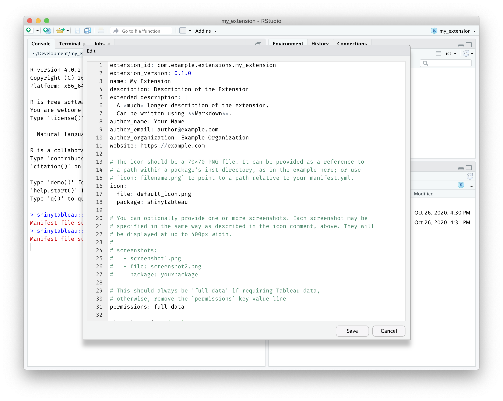
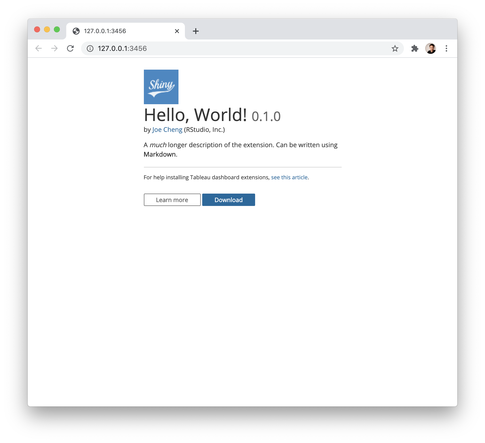

Writing your first extension
helloworld.RmdPut simply, a shinytableau extension is a specially structured Shiny app. (If you haven’t written a Shiny app before, you’re definitely going to want to go through the Shiny tutorial, at the very least, before attempting to go further with shinytableau.)
Let’s start by creating the simplest possible Tableau extension: one that will display the string "Hello, world!". First, create a new, empty RStudio project using File > New Project… > New Directory > New Project.
Create extension manifest
Once RStudio has opened your new project, run this command from the R console:
shinytableau::yaml_skeleton()This will create an example manifest.yml file in your project, which controls the metadata that is displayed to Tableau users when they install the extension. Take a moment to customize its contents to fit your extension.

Besides the obvious fields like name, description, and author, you’ll also want to change the extension_id to a value unlikely to be used by anyone else, e.g. replacing com.example with your company’s reverse domain name.
Create extension Shiny app
Next, create a file called app.R in this directory, and make it look like the following:
# filetype: shinyApp
library(shiny)
library(shinytableau)
manifest <- tableau_manifest_from_yaml()
ui <- function(req) {
fillPage(theme = shinytableau_theme(), padding = 12,
h2("Hello, world!")
)
}
server <- function(input, output, session) {
}
tableau_extension(manifest, ui, server,
options = ext_options(port = 3456)
)If you’ve written a Shiny app before, this code should look comfortingly familiar. The main differences are the manifest object, the ui being wrapped in function(req) {...} (optional in a regular Shiny app, but mandatory here), and where the last line is usually shinyApp(ui, server) we instead have tableau_extension(manifest, ui, server).
There are two other small differences worth noting. First, the file starts with the comment:
# filetype: shinyAppThis is a hint to the RStudio IDE that even though the file doesn’t look like a Shiny app (because it doesn’t end with shinyApp(ui, server)), it actually is.
Second, the call to tableau_extension includes a hardcoded port number. For local development purposes, it’s a good idea to hardcode the port to a unique value (between 1025 and 49151) for each extension that you create.
Running and using extensions
Now, press Ctrl+Shift+Enter (or Cmd+Shift+Return on Mac) and you should see the info page for this extension appear.

Click the Download button to download the .trex file.
Next, go to your Tableau dashboard, and drag an Extension object onto it; from the dialog that appears, click My Extensions. This will launch a file chooser. Pick the .trex file you downloaded, and you should see “Hello, world!” in your dashboard.

Now that you’ve seen the basic structure of a shinytableau extension, we’ll show you how you can add a configuration dialog to your extension so that Tableau users can customize it to their needs.
Next step: Adding configuration settings